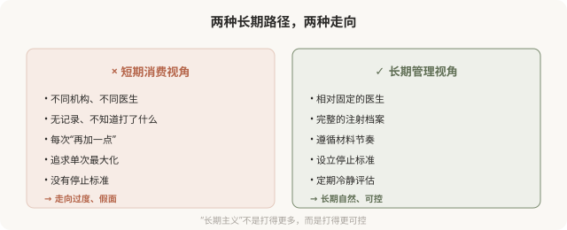

先说结论：注射（尤其填充和肉毒）效果会消退，是一种需要长期管理的治疗，而不是一次性消费。把注射纳入“长期管理”的视角——建立档案、保持稳定的医生关系、设立停止标准、定期冷静评估——比追求单次完美更能让你在数年甚至更长时间里保持自然。长期主义的注射者，往往比反复“刷新”的注射者更自然、更省心、也更安全。
为什么需要长期视角

注射的“长期主义”不是鼓励你打更多，而是让你的注射更可控——清楚打了什么、为什么打、什么时候停。这种视角让人保持自然，而短期消费视角容易走向过度。
建立自己的注射档案
一份完整的注射档案应该包括：
- 每次注射的日期、部位、材料、品牌、批号、剂量。
- 操作医生和机构。
- 术前术后照片（相同光线、角度）。
- 效果记录：起效时间、自然程度、维持时间、消退过程。
- 不良反应记录：肿胀、淤青、过敏、结节等。
这份档案的价值在于：当你多年后回顾，能清楚知道累计打了什么、多少；当出现并发症时，能溯源；当换医生时，能让新医生了解你的历史。没有档案的注射者，往往在不知不觉中走向过度。
保持相对固定的医生
长期注射，相对固定的医生关系有几个好处：
- 他了解你的解剖和反应：知道你对什么材料反应好、哪个剂量合适。
- 他能追踪长期走向：判断你是保持自然还是开始过度。
- 他能诚实地劝你停：一个了解你的医生，更可能在你过度时说“够了”。
- 减少重复和冲突：不同医生不知彼此操作，容易材料叠加失控。
频繁更换医生、追逐“最新优惠”，看似省心省钱，长期看往往走向不可控。
设立停止标准
长期注射必须有停止标准（见第 20 篇）：
- 效果目标：达到“自然改善”就停，不追求完美。
- 部位限制：不随意扩展。
- 频率限制：遵循材料节奏。
- 总量意识：累计剂量有概念。
没有停止标准的长期注射，几乎注定走向过度。
定期“冷静期”
每隔一段时间（如一年），给自己一个冷静评估期：
- 暂停所有注射 1–2 个月，看材料代谢后的真实状态。
- 对比一年前的照片，判断长期走向是否自然。
- 重新审视诉求：是不是被“再加一点”推动，而不是基于真实需要。
这种冷静期能防止你在惯性中越走越远。很多“注射脸”的形成，就是因为从未停下来审视。
长期注射的成本意识
把注射当长期管理，意味着持续的成本投入：
- 经济成本：填充和肉毒需要反复维持，累计费用不低。
- 时间成本：定期复诊、观察、调整。
- 风险成本：每次注射都有并发症风险，累计风险存在。
- 心理成本：对效果的持续关注可能带来焦虑。
把这些纳入决策，比只看单次价格更现实。如果你不愿意或不能承担长期投入，可能需要重新考虑是否开始注射，而不是打了再说。
长期主义的核心
长期主义注射的核心是可控：清楚打了什么、为什么打、什么时候停、走向哪里。一个可控的长期注射者，能在数年甚至更长时间里保持自然；一个失控的注射者，可能在几次注射后就走向假面。
注射的艺术，很大程度上是长期克制的艺术。
本文用于健康教育，不能替代面诊和个体化评估；注射须在正规医疗机构由具备资质的医师开展。